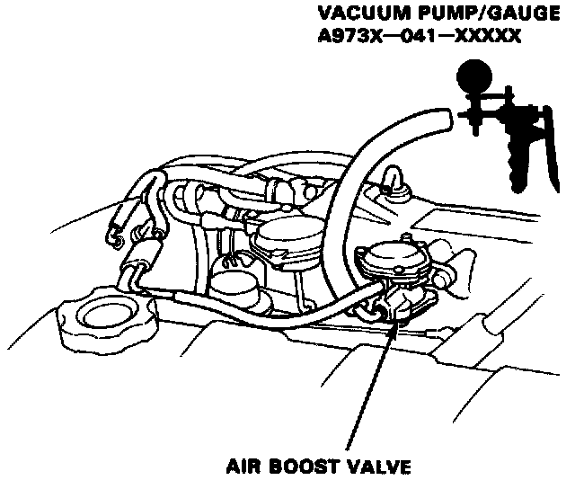

Starting Air Valve: Testing and Inspection

Air Boost Valve (A/T Only) Inspection
1. With the engine off, disconnect the vacuum hose from the intake manifold and connect the vacuum pump to the vacuum hose.
2. Apply vacuum to the hose.
It should not hold vacuum.
- If vacuum is held, replace the air boost valve.
- If vacuum is not held, go to step 3.
3. Disconnect the vacuum pump/gauge.
4. Start the engine and allow it to idle. Reconnect the vacuum pump/gauge to the hose.
There should be no vacuum at the hose.
- If there is vacuum, replace the air boost valve and retest.
- If there is no vacuum, the air boost valve is OK.